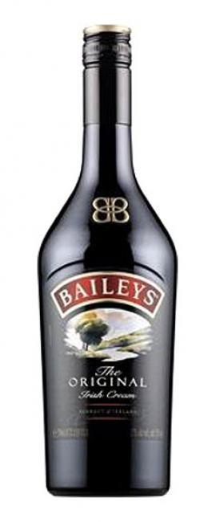

Dešra
 По-русски Latviski +37069561403 Susisiekime Registruotis Prisijungimas Prisijungimas Prekių krepšelis Krepšelis tuščias. Viso prekių už 0 € Peržiūrėti krepšelį Iki nemokamo pristatymo liko 47 € Pristatysime nemokamai! GAUKITE PER 1 VAL. VILNIUJE Patiekalai Prekės BAKALĖJA Gurmaniškos dovanos Duonos gaminiai, konditerija, tortilijos Kava, arbata Aliejus Balzaminis actas Produktai su trumais (triufeliais) Užtepėlės Makaronai Konservuotos daržovės Kruopos Ankštiniai Užkandžiai Saldumynai Granola, dribsniai Kulinarija Tešla Miltai, krakmolas, džiūvėsėliai Cukrus, druska, prieskoniai Padažai, majonezas Marmeladai, čatniai Sirupai PIENO GAMINIAI, KIAUŠINIAI Sūris Pienas, kefyras, rūgpienis Sviestas Grietinė, grietinėlė Varškė ir varškės gaminiai Jogurtai ir desertai Ledai Sūreliai Kiaušiniai Gėrimai be laktozės Kastinys MĖSA IR MĖSOS GAMINIAI Foie gras, paštetai Kumpiai, dešros ir kiti mėsos gardumynai Šviežia mėsa ir paukštiena Šaldyta mėsa ir paukštiena JŪROS GĖRYBĖS IR ŽUVYS Šviežia žuvis Krevetės Silkė Ikrai Austrės Ančiuviai Konservuotas tunas Konservuotos žuvys ir jūros gėrybės Jūros žolė Midijos VAISIAI, DARŽOVĖS, GRYBAI Šviežios daržovės Švieži vaisiai Daigai Šaldytos daržovės Šaldyti grybai Raugintos, marinuotos daržovės MŪSŲ RESTORANO GAMINIAI GRILIUI Mėsos, paukštienos, žuvies gaminiai kepimui Sūris kepimui Padažai, marinatai griliui Prieskoniai griliui Mėsainių bandelės, tortilijos Anglys, kaladėlės, pjuvenos ŠALDYTI PRODUKTAI Šaldyti koldūnai Ledai Šaldytos daržovės Šaldytos jūros gėrybės ir žuvys Šaldyti miltiniai gaminiai Šaldyti mūsų restorano gaminiai Šaldyta mėsa ir mėsos gaminiai VEGANIŠKI PRODUKTAI GĖRIMAI Vanduo Sultys, nektarai ir sulčių gėrimai Vaisvandeniai Fermentuoti gėrimai ALKOHOLINIAI GĖRIMAI Vynas Šampanas, putojantys vynai Stiprieji gėrimai Sidras Alus Pakruojo spirito varykla NAMAMS, GROŽIUI, SVEIKATAI Kosmetika Aromaterapija Drėgnos servetėlės Japoniška keramika Maisto papildai ir vitaminai GAUKITE PER 1 VAL. VILNIUJE Patiekalai Prekės BAKALĖJA Gurmaniškos dovanos Duonos gaminiai, konditerija, tortilijos Kava, arbata Aliejus Balzaminis actas Produktai su trumais (triufeliais) Užtepėlės Makaronai Konservuotos daržovės Kruopos Ankštiniai Užkandžiai Saldumynai Granola, dribsniai Kulinarija Tešla Miltai, krakmolas, džiūvėsėliai Cukrus, druska, prieskoniai Padažai, majonezas Marmeladai, čatniai Sirupai PIENO GAMINIAI, KIAUŠINIAI Sūris Pienas, kefyras, rūgpienis Sviestas Grietinė, grietinėlė Varškė ir varškės gaminiai Jogurtai ir desertai Ledai Sūreliai Kiaušiniai Gėrimai be laktozės Kastinys MĖSA IR MĖSOS GAMINIAI Foie gras, paštetai Kumpiai, dešros ir kiti mėsos gardumynai Šviežia mėsa ir paukštiena Šaldyta mėsa ir paukštiena JŪROS GĖRYBĖS IR ŽUVYS Šviežia žuvis Krevetės Silkė Ikrai Austrės Ančiuviai Konservuotas tunas Konservuotos žuvys ir jūros gėrybės Jūros žolė Midijos VAISIAI, DARŽOVĖS, GRYBAI Šviežios daržovės Švieži vaisiai Daigai Šaldytos daržovės Šaldyti grybai Raugintos, marinuotos daržovės MŪSŲ RESTORANO GAMINIAI GRILIUI Mėsos, paukštienos, žuvies gaminiai kepimui Sūris kepimui Padažai, marinatai griliui Prieskoniai griliui Mėsainių bandelės, tortilijos Anglys, kaladėlės, pjuvenos ŠALDYTI PRODUKTAI Šaldyti koldūnai Ledai Šaldytos daržovės Šaldytos jūros gėrybės ir žuvys Šaldyti miltiniai gaminiai Šaldyti mūsų restorano gaminiai Šaldyta mėsa ir mėsos gaminiai VEGANIŠKI PRODUKTAI GĖRIMAI Vanduo Sultys, nektarai ir sulčių gėrimai Vaisvandeniai Fermentuoti gėrimai ALKOHOLINIAI GĖRIMAI Vynas Šampanas, putojantys vynai Stiprieji gėrimai Sidras Alus Pakruojo spirito varykla NAMAMS, GROŽIUI, SVEIKATAI Kosmetika Aromaterapija Drėgnos servetėlės Japoniška keramika Maisto papildai ir vitaminai Pradžia / MĖSA IR MĖSOS GAMINIAI / Kumpiai, dešros ir kiti mėsos gardumynaiMĖSA IR MĖSOS GAMINIAI
Foie gras, paštetai Kumpiai, dešros ir kiti mėsos gardumynai Šviežia mėsa ir paukštiena Šaldyta mėsa ir paukštienaPagalba
Pristatymo sąlygos Pirkimo sąlygos Kontaktai Maisto tvarkymo pažymėjimo numeris 69MTSPP-7648/69V1-328Kumpiai, dešros ir kiti mėsos gardumynai
1 - 12 iš 12 Kiaulienos kumpis Jamon Serrano, vytintas 9 mėn, 100 g Kaina 2 44 € Karštai rūkyta kiaulienos nugarinė, pjaustyta, 100 g Kaina 0 95 € (9 50 € / Kg ) Kiaulienos dešrelės HOT DOG, Senfter, 250 g Kaina 2 23 € Kiaulienos kumpis Prosciutto Di Parma DOP, pjaustytas, vytintas, Casa Modena, 70 g Kaina 4 62 € Dešrelės CHORIZO grill, Casademont, 300 g Kaina 5 43 € Kiaulienos kumpis Jamon Serrano Loncheado, pjaustytas, 80g Kaina 2 33 € Karštai rūkytas kiaulienos šoninės vyniotinis, pjaustytas, 100 g Kaina 1 45 € (14 50 € / Kg ) Prekė išparduota. Susisiekite Virtas jaučio liežuvis, pjaustytas, 100 g Kaina 1 49 € Prekė išparduota. Susisiekite Kiaulienos dešrelės Wiener, Senfter, 200 g Kaina 1 99 € Prekė išparduota. Susisiekite Kiaulienos dešrelės Servelade, Senfter, 200 g Kaina 1 68 € Prekė išparduota. Susisiekite Dešrelės CHORIZO grill, Casademont, 2 kg Kaina 27 35 € Prekė išparduota. Susisiekite Saliamio dešra su trumais (triufeliais) 250 g Kaina 8 49 € Prekė išparduota. SusisiekitePrenumeruok ir laimėk
Mūsų restoranas
Apie mus Kontaktai Pirkimo taisyklės Pristatymo sąlygos Privatumo politika Pobūvių salė Sraigė ir Varlė UAB "Sraigė ir varlė". Kodas: 302598453. PVM mokėtojo kodas: LT100005981519. Plytinės g. 29-42, LT-10105, Vilnius. Telefonas: +37069561403. Sąskaitos nr.: LT797300010126090292, AB Swedbank. Banko kodas: 73000, SWIFT: HABALT22. © 2020 UAB "Sraigė ir varlė". Be UAB "Sraigė ir varlė" sutikimo draudžiama kopijuoti ir platinti svetainėje esančią informaciją. Elektroninių parduotuvių nuoma verskis.lt Į viršų